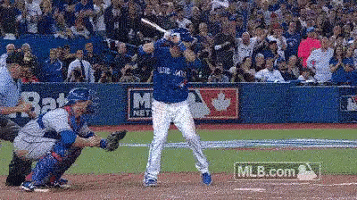

History of College Baseball
The first intercollegiate baseball game took place in Pittsfield, Massachusetts, on July 1, 1859, between squads representing Amherst College and Williams College. Amherst won, 73–32. This game was one of the last played under an earlier version of the game known as "Massachusetts rules", which prevailed in New England until the "Knickerbocker Rules" (or "New York Rules") developed in the 1840s gradually became accepted.[1] The first ever nine-man team college baseball game under the Knickerbocker Rules still in use today was played in New York on November 3, 1859 between the Fordham Rose Hill Baseball Club of St. John's College (now Fordham University) against The College of St. Francis Xavier, now known as Xavier High School. The Massachusetts Rule consisted of the absence of foul territory, which allowed a skillful striker to literally "use the whole field" when he put the ball in play. One of a striker's greatest skills (writes David Block) was to tip the ball back over the catcher's head. The rules allowed 10 to 14 players on a side, to help cover the whole field. But put-outs were hard to come by, so the rule was "one out, all out" - a team's inning ended when one player was put out. Runs were plentiful. The rules declared the winner to be the first team to score 100 runs. Today there are about 299 Division I, 274 Division II, 362 Division III, 501 Junior College, and 188 NAIA baseball programs. Many of the most talented players; however, get drafted straight out of high school. Today the College World Series is every teams ultimate goal. The College World Series is played in Omaha, Nebraska, but the first three years it was played in Kalamazoo, Michigan in 1947 and 1948 and in Wichita, Kansas in 1949. It has been held in Omaha, Nebraska since 1950 with a change from Rosenblatt Stadium to the current TD Ameritrade Park. All time champions of all divisions of college baseball is attached below.
History of the MLB
Major League Baseball (MLB) is a professional baseball organization, the oldest of the four major professional sports leagues in the United States and Canada. Major League Baseball has been around for about 149 years beginning in 1869. The Cinncinati Reds were the first team founded in that year. A total of 30 teams play in the National League (NL) and American League (AL), with 15 teams in each league. The NL and AL were formed as separate legal entities in 1876 and 1901 respectively. After cooperating but remaining legally separate entities beginning in 1903, the leagues merged into a single organization led by the Commissioner of Baseball in 2000. Founded on February 2, 1876, to replace the National Association of Professional Base Ball Players (NAPBBP) of 1871–1875, (often called simply the "National Association"), the NL is sometimes called the Senior Circuit, in contrast to MLB's other league, the American League of Professional Base Ball Clubs ("American League"), which was founded 25 years later. Both leagues currently have 15 teams.
The Progression of a Young Baseball Player


Many players do crazy celebrations such as Bat Flips
How Technology has Changed the Game of Baseball
Technology is probably the thing that has changed the game of baseball the most. When baseball was first played, players barely had a "glove" or a "bat" like players do and now in today's game players have the most advanced equipment anyone has ever seen. The technology is crazy... There are radar guns that measure exit velocity of the bat, pitching velo, and velocity from any position, as a tool to be evaluated by coaches at the next level. Today's game is using numbers like never before. There are many other measuring tools that are pretty much not even necessary such as bat speed impact, hand speed max, time to impact, bat vertical angle at impact, attack angle, launch angle, etc. Many companies such as Blast Motion and Zepp Baseball have almost introduced these new measuring tools, and they use it to make money and preach that looking at the numbers will make you a better player when all YOU have to do is PLAY.